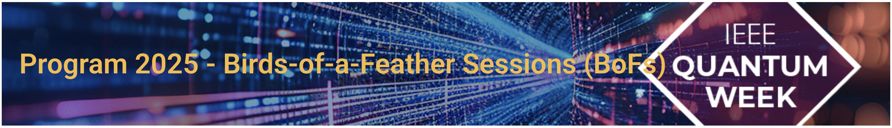

QCE25 - BoF
Exploring Distributed Quantum Simulators on Exa-scale HPC Systems
Date:
Wednesday, September 3, 2025
Time:
3:00 PM - 4:30 AM MDT
Room:
Apache - L
In the current era of Noisy Intermediate-Scale Quantum (NISQ) computing, quantum simulators are crucial tools to catalyze significant breakthroughs across diverse scientific domains, including chemistry, materials science, and other complex problem areas. Recognizing their pivotal role, a gathering of experts is being convened to explore the critical and strategic integration of these quantum simulators with massively parallel and distributed high-performance computing (HPC) systems. The primary focus of this exploration will be on two prominent and powerful simulation techniques: Tensor Network methods and Statevector/Density Matrix simulators. This session will provide a deep dive into the synergies between these advanced simulation approaches and the computational power offered by modern supercomputers, setting the stage for the next generation of quantum research. The core agenda of the session is dedicated to addressing key technical and collaborative challenges in this rapidly evolving field. Discussions will concentrate on innovative algorithm design tailored for HPC environments, the development of sophisticated hybrid frameworks that seamlessly combine classical and quantum computational resources, and the crucial task of establishing robust performance benchmarks on large-scale CPU/GPU HPC infrastructures. By bringing together leading researchers, the event aims to highlight the most recent advances, openly discuss persistent challenges, and collaboratively chart future directions for the field. The ultimate objective is to foster a spirit of collaboration and promote effective resource-sharing strategies, thereby accelerating the progress of quantum simulation research and harnessing the power of exa-scale HPC to drive the development of practical and impactful quantum computing applications forward.
In the current era of Noisy Intermediate-Scale Quantum (NISQ) computing, classical quantum simulators are indispensable. They are critical tools for advancing fields like chemistry, materials science, optimization, and machine learning, allowing for the efficient development, testing, and analysis of quantum circuits, algorithms, and states in a controlled environment. Despite rapid progress in quantum hardware, its present limitations mean that these classical simulators are essential for continued innovation in quantum computing. This Birds of a Feather (BoF) session aims to bring together experts to investigate the integration of these quantum simulators, particularly Tensor Network and Statevector/Density Matrix simulators, with parallel and distributed exa-scale High-Performance Computing (HPC) systems. Our primary objectives are to:
The workshop will cover, but is not limited to, the following topics:
The BoF is targeted at:
In the rapidly advancing field of quantum computing, classical simulation of quantum systems remains an indispensable tool. Despite the promise of quantum computing to perform tasks exponentially faster than classical computers, current quantum hardware limitations necessitate the continued use of classical simulators. These simulators enable efficient development, testing, and analysis of quantum circuits, algorithms, and states in a controlled environment, thus facilitating progress and innovation in quantum computing. This Birds of a Feather (BoF) session gathers researchers, practitioners, and industry experts to discuss the integration of quantum simulators with exa-scale High-Performance Computing (HPC) systems. This session focuses on the latest developments, challenges, and future directions in the optimization of quantum algorithms for simulators, hybrid quantum-classical frameworks, and the performance assessment of quantum simulators leveraging modern HPC infrastructures. This BoF session will delve into the integration of quantum simulators with exa-scale HPC systems, focusing on Tensor Network and Statevector/Density Matrix simulators. Key themes include:
This session is timely and pertinent for addressing the challenges and opportunities of quantum simulation. We aim to foster a deep understanding of how large-scale HPC platforms can accelerate quantum simulation research, ultimately driving real-world applications of quantum computing. By bringing together experts from various domains, this BoF session seeks to advance the integration of quantum simulators with large-scale HPC infrastructures, ultimately contributing to the broader field of quantum computing and its practical applications. Attendees will gain valuable insight into the latest advances in quantum simulation, the optimization of quantum algorithms, and the imple